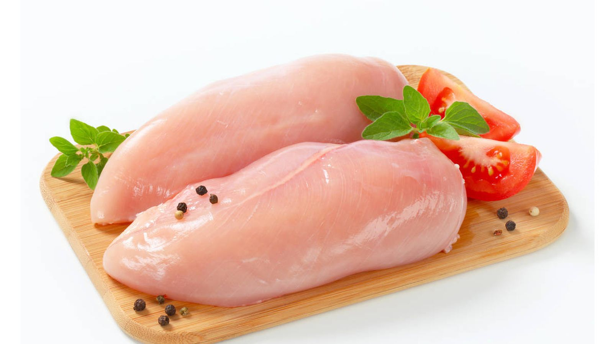

Ensalada de pollo y aguacate
Ingredientes:
- 2 pechugas de pollo

- 2 aguacates
- 1/2 cebolla roja
- 1/4 taza de cilantro fresco
- 1/4 taza de jugo de limón fresco
- 2 cucharadas de aceite de oliva

- Sal y pimienta negra molida al gusto
Instrucciones:
- Cocina las pechugas de pollo a la parrilla, en una sartén o en una plancha eléctrica. Asegúrate de cocinarlas por ambos lados hasta que estén bien doradas y cocidas por completo. Deja enfriar las pechugas de pollo durante unos minutos antes de cortarlas en trozos pequeños.
- Mientras tanto, corta los aguacates por la mitad y quita el hueso. Usa una cuchara para sacar la carne del aguacate y córtala en cubos pequeños.
- Corta la cebolla roja en rodajas finas y pica el cilantro fresco.
- En un tazón grande, mezcla el jugo de limón fresco, el aceite de oliva, la sal y la pimienta negra molida al gusto. Agrega los trozos de pollo, los cubos de aguacate, la cebolla roja y el cilantro picado. Mezcla todo bien para que se integren los sabores.
- Sirve la ensalada de pollo y aguacate en platos individuales y disfruta.